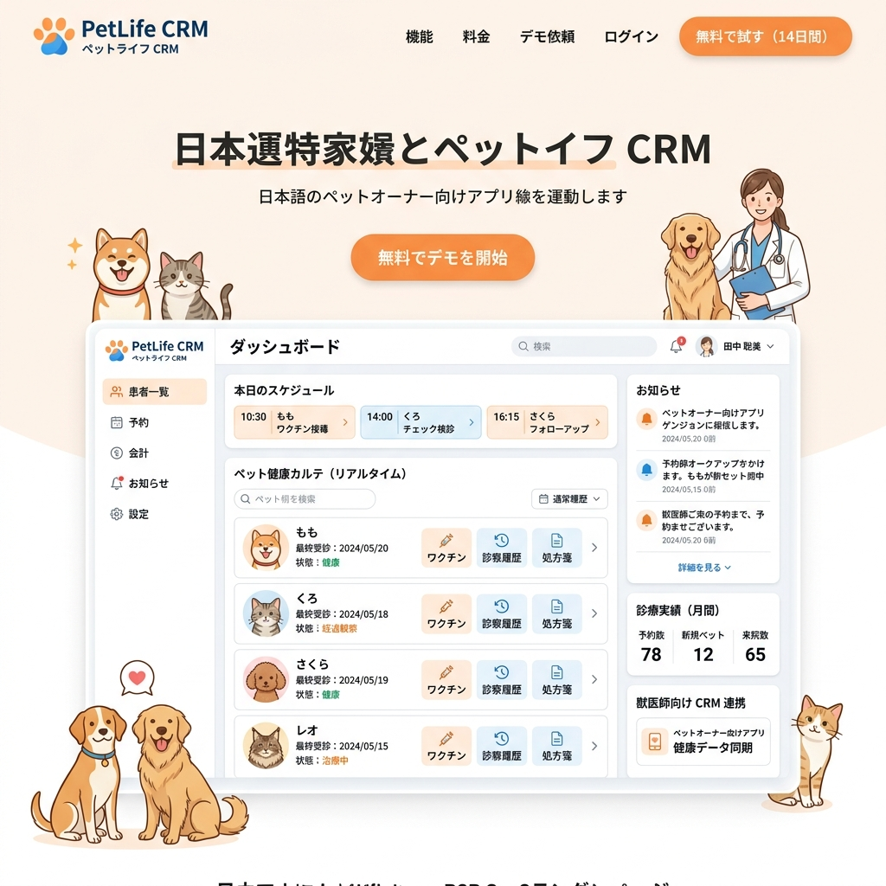

health
全国の獣医師とつながる、
全国の獣医師とつながる、
ペットのための生涯健康カルテ。
引っ越しや休日の救急。初めての動物病院で「過去の病歴」や「アレルギー」を正確に伝えるのは難しい。最悪の場合、手遅れになってしまうことも。すべての医療記録をスマートに一元管理しませんか？

クラウド生涯カルテ
ワクチン接種歴、血液検査、処方薬の履歴をアプリで一元管理。新しい病院でもQRコード一つで共有可能。
獣医師ネットワーク
提携する全国の動物病院間でシームレスにデータを連携。より正確で迅速な診断をサポートします。
AI異変アラート
毎日の食事量や排泄状況をメモするだけで、AIが小さな異変を検知し、早期受診を促します。